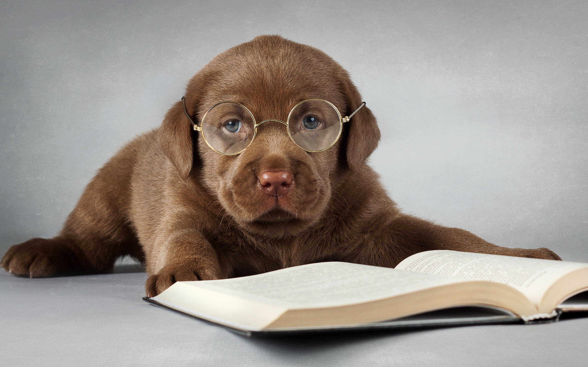
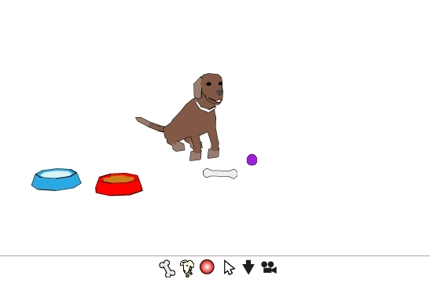
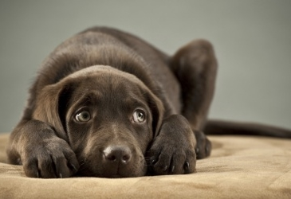
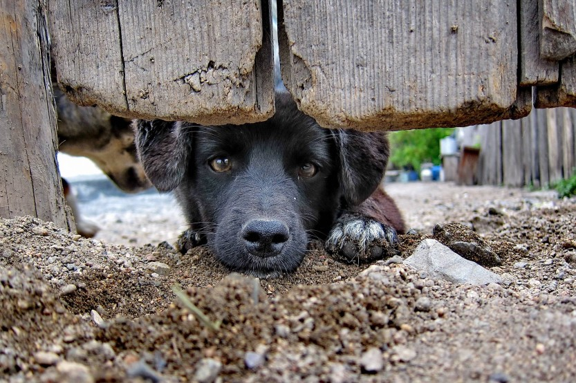
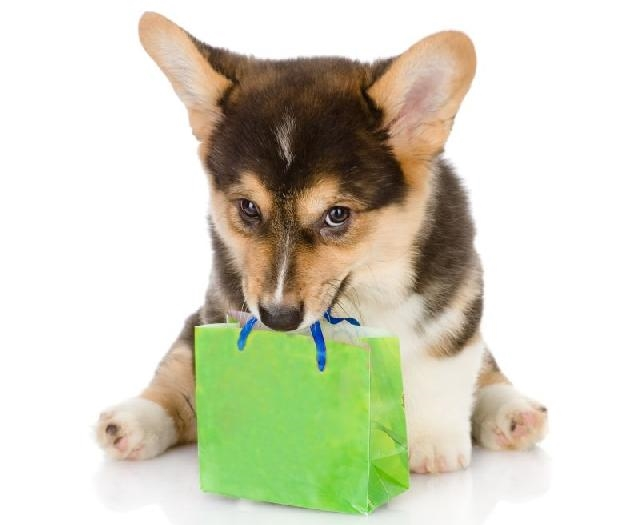

|  |
Inspire-se
Gosta de animais? Veja pensamentos de pessoas iguais a você!
|
|  |
Cãozinho Virtual
Nem todos possuem condições de cuidar de um animal, mas agora você pode! Cuide do AdoCão, o nosso mascote virtual!
|
|  |
Adote um Animal
Os animais também possuem sentimentos, só que muitos não possuem um lar e nem carinho, mas com a sua ajuda eles podem ter!
|
|  |
Doar um Animal
Encontrou um animal abandonado? Ajude a sair desta situação! Faça um rápido cadastro e ajude-o a finalmente ter um lar digno!
|
|  |
PetShop
Você já possui um Pet mas está sem recursos para cuidar dele? Este PetShop é o seu lugar, de tudo um pouco e um pouco de tudo!
|
 |
Quem Somos?
Afinal de contas, quem está por detrás do AdoCão?
|